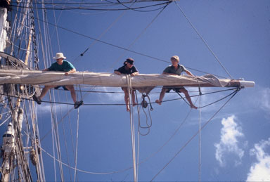
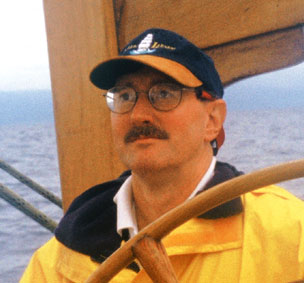
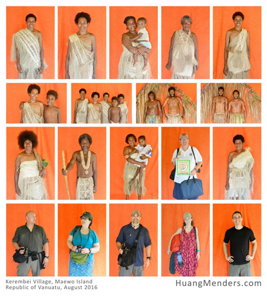

Dr. Llewellyn “Lew” Toulmin was born in Mobile, Alabama, the son of Harry and Mary Toulmin of Mobile, and is a direct descendant of Judge Harry Toulmin (1766-1823), one of the founding fathers of Alabama. Lew is a travel columnist, advisor to foreign governments, and adventurer. He is the author of the 2006 non-fiction book,
The Most Traveled Man on Earth.
|

Lew Toulmin aloft (left in white hat) in mid-Pacific, aboard the brigantine Soren Larsen
|
Lew served for 18 years as the monthly travel and adventure columnist and editor for
The Montgomery Sentinel (of Maryland). For ten years he was the cruise editor and columnist for
International Travel News. He has written over 200 non-fiction travel stories, focusing on adventure, exploration, historical discovery, solving mysteries, cruising, tall ships, long distance classic car rallies, interesting biographies, genealogy, private clubs, and bizarre happenings.
Recently Lew was appointed to be the travel-adventure-exploration columnist for Montgomery Community Media, the on-line newspaper of Montgomery County, Maryland. His column can be read at:
www.mymcmedia.org/category/community-blogs/travel-tales
Lew has traveled to over 140 countries and 40 other semi-sovereign territories, and has worked in 30 less-developed countries on over 50 projects for the World Bank, US Agency for International Development and other donors on projects in telecommunications, disaster relief, public administration reform and e-government.
His most recent professional project was working in the Prime Minister’s Office in the Republic of Vanuatu for three years, as a senior advisor to the Chief Information Officer. Previously he planned e-government efforts for the governments of Samoa and Malawi, and helped the World Bank design and begin an $80 million loan package to Vietnam in the area of e-government and telecommunications reform.
Lew’s most recent adventures include:
- Documenting the genealogy and history of the amazing Henson clan, focusing on Reverend Josiah Henson, the heroic inspiration for Uncle Tom’s Cabin, and Matthew Alexander Henson, the co-discoverer of the North Pole
- Digging for traces of a previously unknown tobacco curing barn run by African-American enslaved persons on President James Madison’s Montpelier plantation in central Virginia
- Undertaking a highly sophisticated metal detecting effort at Montpelier, searching for a mystery structure underground near the plantation’s Slave Cemetery
- Documenting the history and genealogy of Matilda McCrear and her descendants – she was kidnapped at the age of two in West Africa and transported to Alabama on the infamous slave ship Clotilda
- Searching for the missing Banqueting Hall and Tudor Garden of Queen Elizabeth I at Sudeley Castle in Gloucestershire
- Searching for Amelia Earhart’s Lockheed Electra on an uninhabited, remote South Pacific island
- Advancing the search for Jim Thompson, the missing “Silk King of Thailand”
- Geo-locating for the first time Jim Thompson’s 1000-year-old temple cave, and searching for his lost Buddha cave
- Finding and documenting the real “Bali Hai” from “South Pacific” in Vanuatu (ex-New Hebrides)
- Serving as co-leader of the Search for the Last Missing W.A.S.P. of World War II
- Organizing the search for “White Hall,” the missing plantation of his great-gggg-grandfather, Brigadier General Andrew Williamson of the South Carolina militia
- Finding the missing town of Washington Court House, Alabama
- Co-leading the Search for Steve Fossett Expedition
- Being a founder of the volunteer Missing Aircraft Search Team (MAST) and assisting in the successful family and MAST search for Cessna N2700Q, missing in Arizona for over two years.
- Leading an Explorers Club Flag Expedition to help research, document and excavate Old St. Stephens, the first capital of Alabama, and one of the first residences in the state of Lew’s great-g-g-g-grandfather, Judge Harry Toulmin, one of the founders of the state.
- Carrying the Explorers Club Flag in an expedition to the Holy Island of Lindisfarne in NE England, where he assisted in the search for a missing monastery built in 650 AD and famously raided by Vikings in 793, an event which marked the start of the Viking Age.
Lew recently led an expedition to Vanuatu to find, interview and document the previously unknown “Female Chiefs of Vanuatu.” This effort was endorsed by The Explorers Club and has led to various publications and a better awareness of these brave and remarkable women.
|

Lew Toulmin at the helm of the tall ship Soren Larsen, off the coast of the real “Bali Hai”
|
Lew and his wife Susan drove their 1968 “Bullitt” Mustang from Maryland to Southern California along all of the National Road and Route 66, up the Pacific Coast Highway to Seattle, and back home along the Lewis and Clark Trail. Previously they drove the Mustang in the 2005 Great Race (a time-speed-distance rally) from the US Capitol in Washington, DC to Tacoma, Washington.
Formerly, Lew was the Chairman of the Section on Emergency and Crisis Management of the American Society for Public Administration. Lew holds a Ph.D. in public administration and economics from American University in Washington, DC, an MPA from the Maxwell School of Syracuse University, and a BA in sociology and political science from Eckerd College in St. Petersburg, Florida.
Based on his re-discovery and documentation of the real “Bali Hai” from South Pacific and on his other work and explorations overseas, Dr. Toulmin was elected as a Fellow to the prestigious Explorers Club (headed until his death in 2008 by Sir Edmund Hillary, the conqueror of Mt. Everest).
Lew is a member of the Cosmos Club and the Travelers’ Century Club, a Fellow of the Royal Geographical Society, a Fellow of the Royal Society for the encouragement of the Arts, Commerce and Manufactures (the RSA), and a Knight of the Sovereign Military Order of the Temple of Jerusalem (the Knights Templar).
Lew is also a member of the Society of the Cincinnati, the Descendants of the Signers of the Declaration of Independence, the Jamestowne Society, and numerous other heritage organizations. He served as the Governor-General of the Hereditary Order of the Descendants of the Loyalists and Patriots of the American Revolution, as the President of the Hereditary Order of the Families of the Presidents and First Ladies of America, and as an officer in several other lineage societies.
Lew and his wife Susan Little Toulmin (formerly of the Library of Congress) live in Silver Spring, Maryland and Fairhope, Alabama.

Lew and Flag #212 of The Explorers Club, in the main archaeological trench at Sudeley Castle in Gloucestershire, looking for the missing Banqueting Hall and Tudor Garden of Queen Elizabeth I.
|

Lew, Explorers Club Flag #50, and other team members digging on the Holy Island of Lindisfarne in NE England, searching for the missing medieval Monastery of King St. Oswald of Northumbria. Flag #50 had previously been on the first solar-powered flight around the world, and into space with Virgin Galactic.
|

Lew and Flag #212 of The Explorers Club at President James Madison’s Montpelier plantation in Virginia. Lew is whispering key points on constitutional drafting into the ear of James, the “Father of the US Constitution.” Dolley Madison looks on approvingly.
|
|

Residents of Kerembei village, Maewo island, Vanuatu and members of the Female Chiefs of Vanuatu expedtion (Huang/Menders photo)
|